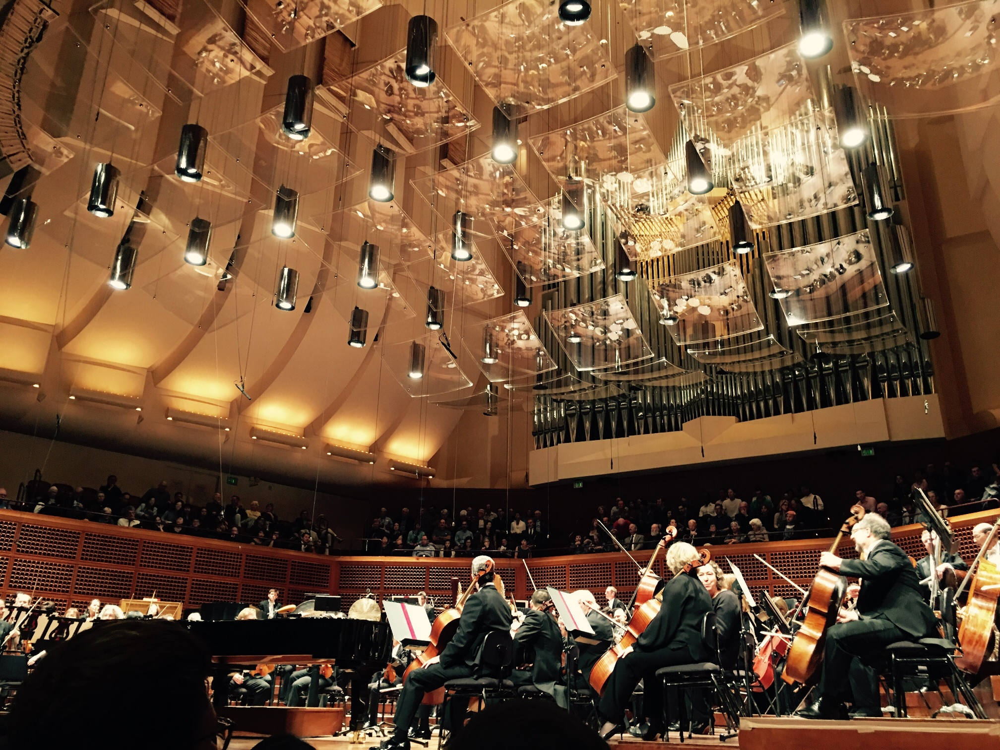

I studied piano for 9 years in my childhood and early teenage years, and I remain an aficionado of classical music. By classical music I mean "precise music", which includes music from the Baroque/classical/romantic/impressionist era, etc. Do you aspire to be a connoisseur of classical music but get bored or get lost easily when you listen to works like Brahms Op.118, Berg Piano Sonata, or one of those really long Mahler or Bruckner symphonies? It's easier to start with short pieces that have a story or picture connected to them. Here are some examples.
Johann Strauss II:
Most of the Polkas, really
Beethoven:
Piano Sonata No.17 in D Minor "Tempest"
Brahms:
Hungarian Dances
Debussy:
"La Neige Danse (The Snow Dance)" from Children's Corner
Chopin:
Piano Sonata No.2 in B-Flat Minor, 3rd Movement "Marche Funèbre"
Polonaise in A Major, Op.40 No.1 "Military" ("Symbol of Polish glory" - Arthur Rubinstein)
Polonaise in A-Flat Major, Op.53 "Heroic"
Étude in C Minor, Op.10 No.12 "Revolutionary"
Étude in A-Flat Major, Op.25 No.1 "Aeolian Harp"
Étude in A minor, Op.25 No.11 "Winter Wind"
Waltz In D-Flat Major, Op.64 No.1 "Petit Chien (Smol Pupper)"
Ravel:
La Mer (The Sea), L.109
Jeux d'eau (Playing Water)
Saint-Saën:
Carnival of The Animals
Danse Macabre, Op.40
Mozart:
"Dies Irae" from Requiem in D Minor, K.626
Liszt:
Grandes études de Paganini, No.3 "La Campenella" (The Little Bell)
La Lugubre Gondola (The Lugubrious Gondola), S.200, No.1
"Erlkönig" from 12 Lieder von Franz Schubert, S.558
Mendelssohn:
Lieder ohne Worte, Op.19 No.3, Molto allegro e vivace "Jagerlied (Hunting Song)"
Mussorgsky:
Pictures At Exhibition,
Smetana:
Vyšehrad (The High Castle)
Vltava (The Vltava River)
Z českých luhů a hájů (From Bohemian woods and fields)
(These are all from Smetana's Má Vlast "My Fatherland".)
Scriabin:
Vers la Flamme (Toward The Flame), Op.72. It's about the world coming to a flaming end!
But of course, music is not really about the story or picture or whatever theme connected to it. Music is really about emotions, much like how a visual artist uses pictures and objects to express his/her emotions and evoke emotions from the audience. We can take away the name of a piece, for example, "Petit Chien" or "Tempest" or "Jagerlied", and the music would still make sense. Here are some pieces with strong emotions.
Beethoven:
Piano Sonata No.8 in C Minor, Op.13 "Pathetique"
Piano Sonata No.26 in E-Flat, Op.81a "Les Adieux". The 3 movements are called Das Lebewohl (Farewell), Abwesendheit (Absence), Das Wiedersehn (Reunion).
Chopin:
Piano Sonata No.2 in B-Flat Minor, 1st movement, Grave - Doppio movimento
Piano Sonata No.3, Op.58 in B Minor, 4th movement, Finale Presto non Tanto
Nocturne in F Minor, Op.55 No.1
Nocturne in B-Flat Minor, Op.9 No.1
Polonaise in C minor, Op.40 No.2 ("Symbol of Polish tragedy" - Arthur Rubinstein)
Brahms:
Sonata for Cello and Piano No.1 in E Minor, Op.38
String Sextet No.1 in B-Flat, Op.18, 2nd Movement, Andante Ma Moderato
Bach:
Chaconne from Violin Partita No.2 BWV 1004 (maybe the Brahms or Busoni transcription for piano versions)
Scriabin:
Étude in D-Sharp Minor, Op.8 No.12 "Pathetique"
Tchaikovsky:
Piano Concerto No.1, OP.23 in B-Flat Minor
If you have a lot of time and patience, check out the following works. You can listen to the following with the libretto (text for the singing part).
Mussorgsky:
Songs and Dances of Death
Mahler:
Kindertotenlieder
Wagner:
The Ring Cycle (Das Rheingold, Die Walküre, Siegfried, Götterdämmerung)
Tristan und Isolde
|  |
| Stravinsky and Shostakovich with San Francisco Symphony |